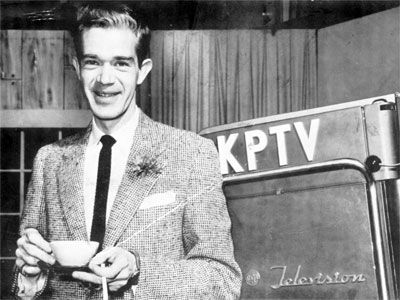
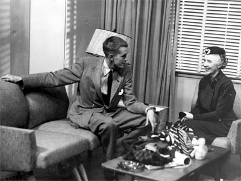

An informal, imaginative half hour of topics, tips and fun
for the homemaker. "Mike" Davenport, as friend of the family, gave
hints and help for the home and family, from the kitchen to garden and basement
to garage. He also chatted about timely topics of interest to the housewife.
Mike is the "friend of the
family" . . . maintaining a benign, capable and genial supervision over
everything on the show . . . as only a bachelor, unfettered by the minor
hysterias of homemaking, can do.
The star of the program is really Mary
Ellen. She is Mike's sister . . . though she is never seen. Each program opens
with a desperation call from her which occasions Mike to say, "Well, get
out of the kitchen (or laundry, or garden, or garage) and turn on your TV set .
. . and I'll show you how to do it."
Mary Ellen has a husband name George . . .
and two children. The problems that the family has are manifold and typical of
every family's problems. These are the things that Mike demonstrates and
discusses on the show.
Who is this "friend of the
family?"
Michael A. Davenport,
producer-turned-performer, has put a background in ad agencies and department
store merchandising to work as talent before the camera. Mike has utilized a
varied and extensive background in theater to create a TV personality--a cut
above the pallid mincings of the "ladies' matinee" emcees.
Mike is middlewestern born, California and
New England educated. He has spent some 14 years in radio, experimental TV,
theater, ad agencies and TV production . . . peppered with considerable leapings
in both amateur and professional theater. By his own confessions: "ad man
turned ham . . . almost as if the two were NOT inseparable."
Article in TV Life,
November 8, 1953